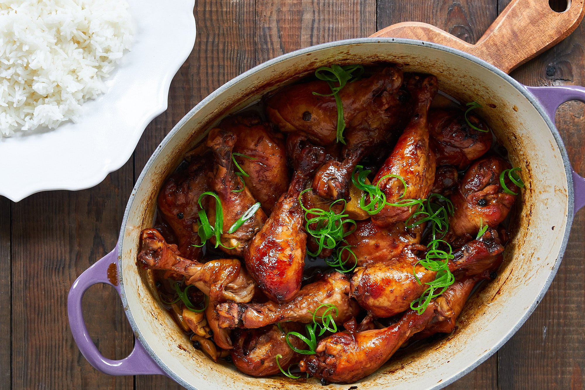

ADOBONG MANOK

This is the classic Filipino dish that we all love
Adobo has its roots in prehistoric times. Vinegar was used by early cooks to store and preserve meat before cooling and refrigeration were available. While this concept was used by indigenous
people around the world, the Spanish were the people to call it “adobo.”
Ingredients
- 2 tablespoons vegetable oil
- 1 (3 pound) chicken, cut into pieces
- 1 large onion, quartered and sliced
- 2 tablespoons minced garlic
- 2/3 cup low sodium soy sauce
- 1/3 cup white vinegar
- 1 tablespoon garlic powder
- 2 teaspoons black pepper
- 1 bay leaf
Steps
- Heat vegetable oil in a large skillet over medium-high heat.
Cook chicken pieces until golden brown, 2 to 3 minutes per side.
Transfer chicken to a plate and set aside.
- Add onion and garlic to the skillet;
cook until softened and brown, about 6 minutes.
- Pour in soy sauce and vinegar and season with garlic powder,
black pepper, and bay leaf.
- Return chicken to pan, increase heat to high, and bring to a boil.
Reduce heat to medium-low, cover, and simmer until chicken is tender
and cooked through, 35 to 40 minutes.